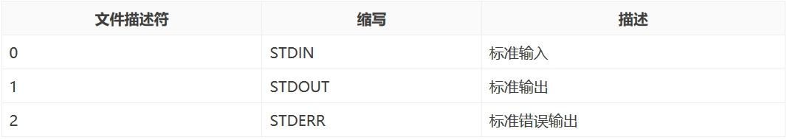
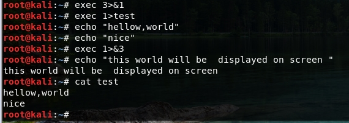
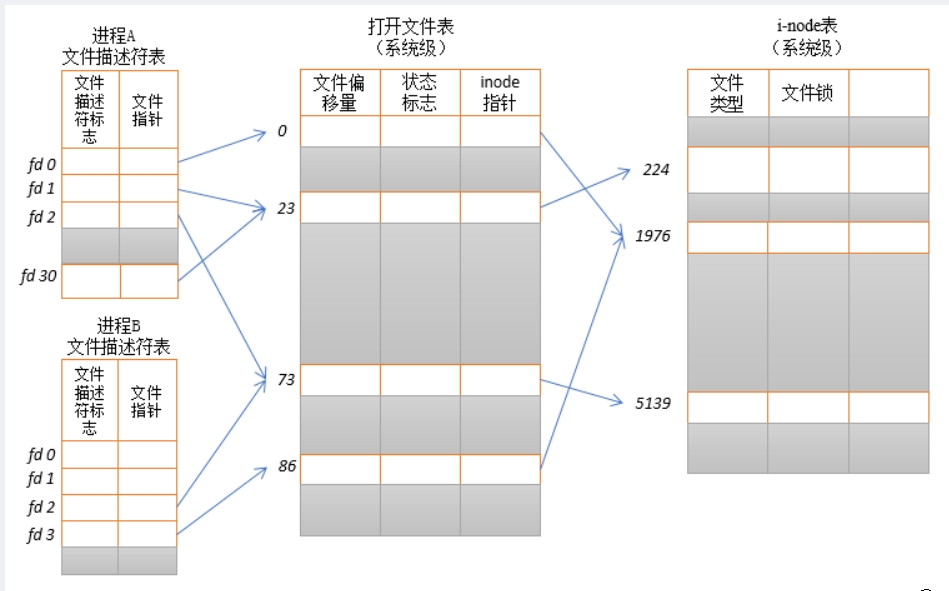
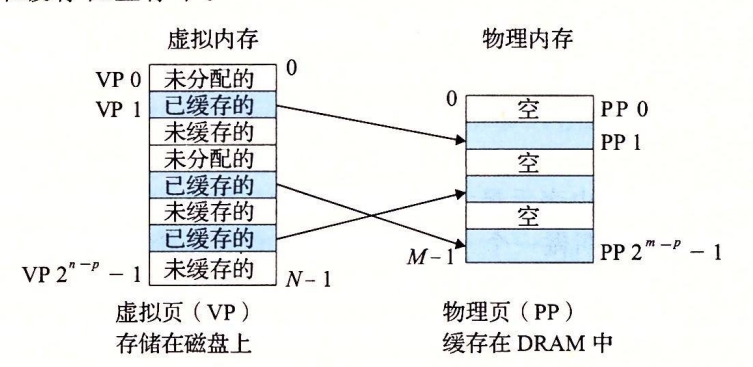

计算机的基本知识
前言
本篇主要讲解文件描述符，信息的存储及寻址，过程的基本知识，通过了解这些，掌握信息在计算机中是怎样存储和查找的，知道堆栈的过程，为学习缓冲区溢出做铺垫。
一：文件描述符
1.1：文件描述符简介
在Unix或Linux系统中，内核（kernel）利用文件描述符（file descriptor）来访问文件。文件描述符是非负整数，Linux系统将所有设备都当作文件来处理，而Linux用文件描述符来标识每个文件对象，打开现存文件或新建文件时，内核会返回一个文件描述符，读写文件也需要使用文件描述符来指定待读写的文件。一般来说一个进程最多可以打开64个文件（0~63），每个进程最多可以打开文件的多少取决于系统内存的大小，int 的大小，以及系统管理员设定的限制。
1.2：标准输入，标准输出，标准错误
按照惯例，UNIX 系统 shell 把文件描述符 0 与进程的标准输入（standard input）关联，文件描述符 1 与标准输出（standard output）关联，文件描述符 2 与标准错误（standard error）关联。这是各种 shell 以及很多应用程序使用的惯例。程序刚刚启动的时候，0是标准输入，1是标准输出，2是标准错误。如果此时去打开一个新的文件，它的文件描述符会是3。文件描述符2理解为我们和计算机交互时，计算机出现错误时的输出，而这个输出默认是和文件描述符1指向一个位置；POSIX标准要求每次打开文件时（含socket）必须使用当前进程中最小可用的文件描述符号码，因此，在网络通信过程中稍不注意就有可能造成串话
1.3：对文件描述符 0,1,2 的应用
由于文件描述符 0,1,2 分别与标准输入、标准输出、标准错误输出相关联，通过制定标准输入和输出的位置可以起到输入/输出重定向的功能。
exec 3>&1
exec 1>test
echo "这句话被存到test文件中"
echo "还有这句"
exec 1>&3
echo "这句话输出到显示器"
我们来一步一步理解上面的命令：首先文件描述符1默认指向的是显示器，用&来找到文件描述符1指向的目标文件，也就是显示器。因此文件描述符3也指向了显示器。然后，我们修改了文件描述符1指向的文件到test文件。接着两个echo命令的输出会自然去找文件描述符1，然后它看到文件描述符1指向的是test文件，所以它会把输出写到test文件中。最后，我们用&来找到文件描述符3指向的目标文件，也就是显示器，然后我们修改了文件描述符1指向的文件到显示器。因此，最后一个echo命令会自然的找文件描述符1然后输出到显示器上。
1.4： 文件描述符合打开文件之间的关系
每一个文件描述符会与一个打开文件相对应，同时，不同的文件描述符也会指向同一个文件。相同的文件可以被不同的进程打开也可以在同一个进程中被多次打开。系统为每一个进程维护了一个文件描述符表，该表的值都是从0开始的，所以在不同的进程中你会看到相同的文件描述符，这种情况下相同文件描述符有可能指向同一个文件，也有可能指向不同的文件。具体情况要具体分析，要理解具体其概况如何，需要查看由内核维护的3个数据结构。
- 进程级的文件描述符
- 系统级的打开文件描述符表
- 文件系统的i-node
进程级的文件描述符表的每一条目记录了单个文件描述符的相关信息
内核对所有打开的文件的文件维护有一个系统级的描述符表格，并将表格中各条目称为打开文件句柄。一个打开文件句柄存储了与一个打开文件相关的全部信息
文件描述符、打开文件句柄和i-node之间的关系
在进程A中，文件描述符1和30都指向了同一个打开的文件句柄（标号23）。这可能是通过调用dup()、dup2()、fcntl()或者对同一个文件多次调用了open()函数而形成的。
进程A的文件描述符2和进程B的文件描述符2都指向了同一个打开的文件句柄（标号73）。这种情形可能是在调用fork()后出现的（即，进程A、B是父子进程关系），或者当某进程通过UNIX域套接字将一个打开的文件描述符传递给另一个进程时，也会发生。再者是不同的进程独自去调用open函数打开了同一个文件，此时进程内部的描述符正好分配到与其他进程打开该文件的描述符一样。
此外，进程A的描述符0和进程B的描述符3分别指向不同的打开文件句柄，但这些句柄均指向i-node表的相同条目（1976），换言之，指向同一个文件。发生这种情况是因为每个进程各自对同一个文件发起了open()调用。同一个进程两次打开同一个文件，也会发生类似情况。
二：信息的存储以及寻址
前言
现代计算机存储和处理的信息都以二进制信号表示，大多数计算机使用8位的块（字节）作为最小的可寻址的内存单位
2.1：信息在计算机中的存储
2.1.1：字数据的大小
每台计算机都有一个字长，常见的有32位字长和64位字长，而虚拟地址就是以这样的一个字来编码的，所以字长决定虚拟地址空间的最大大小，一台计算机的字长为m位时，它的虚拟地址空间范围为0到2的m次方减1，程序最多访问2的m次方个字节，故而32位字长的计算机限制虚拟地址空间为4GB，64位字长的虚拟地址空间大小为16EB
2.1.2：虚拟内存
虚拟内存是对主存的抽象概念，虚拟内存是硬件异常，硬件地址翻译、主存、磁盘文件和内核软件的完美交互，它为每个进程提供了大的一致的和私有的地址空间。虚拟内存提供了三个重要能力。
- 它将主存看成是一个存储在磁盘上的地址空间的高速缓存，在主存中只保存活动区域，并根据需要在磁盘和主存中来回传送数据，通过这种方式它高效的使用了主存。
- 它为每个进程提供了一致的地址空间，从而简化了内存管理
- 它保护了每个进程的地址空间不被其他进程破坏
2.2：信息的寻址
计算机系统的主存是由M个连续的字节大小的单元组成的数组。每个字节都有唯一的一个物理地址，第一个字节的地址为0，以此类推。
2.2.1：物理寻址的过程
- CPU读取执行一条加载指令，生成一个有效物理地址
- CPU通过内存总线将物理地址传递给主存
- 主存取出从物理地址开始的需要的字节，并将它返回给CPU
- CPU将取出的代用的字节放在寄存器
2.2.2：虚拟寻址
- 使用虚拟寻址，CPU通过生成一个虚拟地址来访问主存，这个虚拟地址在被送到内存之前先转换成适当的物理地址（即地址翻译）
- 当虚拟地址被转换成适当的物理地址后，接下来的寻址方式就和物理寻址相同了
CPU芯片上叫做内存管理单元的专用硬件，利用存放在主存中的查询表来动态翻译虚拟地址
2.2.3：地址空间
地址空间是一个非负整数地址的有序集合，一个地址空间的大小是由表示最大地址所需要的位数来描述的，例如一个包含2的n次方个地址的虚拟地址空间就叫做一个n位地址空间，现代系统通常支持32位或64位虚拟地址空间
一个系统还有一个物理地址空间，对应系统中物理内存的M个字节，每个数据对象有多个独立的地址，其中每个对象都选自一个不同的地址空间，主存中的每个字节都有一个选自虚拟地址空间的虚拟地址和一个选自物理地址空间的物理地址。
2.2.4：一个VM（虚拟内存）系统是如何使用主存作为缓存的
虚拟内存被组织为一个由存放在磁盘上的N个连续的字节大小的单元组成的数组。每个字节都有一个唯一的虚拟地址作为数组的索引，磁盘上数组的内容被缓存在主存中。虚拟内存分为多个大小固定的虚拟页，而物理内存也被分割为大小相同的物理页（页帧）
虚拟页的状态：可分为以下三个不相交的子集：
- 未分配的： VM 系统还未分配或创建的页，未分配的页没有任何数据和他们相关联，因此也就不占用任何磁盘空间
- 缓存的： 当前已经缓存在物理内存中的已分配页
- 未缓存的： 未缓存在物理内存中的已分配页
三种状态图解：
虚拟页0和3未分配，虚拟页1,4,6被缓存在物理内存中，虚拟页2，5，7已分配但未缓存在主存中